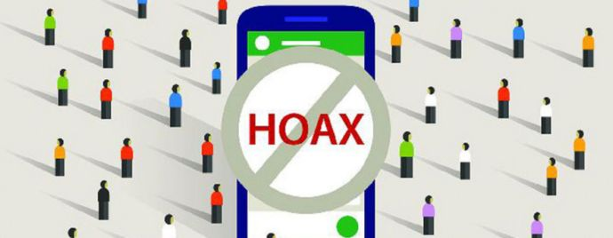

Hubungi: official@matairs.id
Matairs
Segarkan Pikiranmu dengan Obrolan Kami
Highlight Episodes
Episode
Koalisi Nanggung & Drama Politik
BOTIK
- Obrolan nongkrong
- Kritik santai
- Analisis pemilu
- Gimik & strategi

Bisnis dari Garasi ke Galeri
SERIS
- Perjalanan UMKM
- Trial & error
- Mindset pengusaha
- Tips ekspansi
Sains di Balik Hoax: Otak vs Algoritma
BOS
- Riset disinformasi
- Efek psikologis
- Fakta vs persepsi
- Data terbaru
